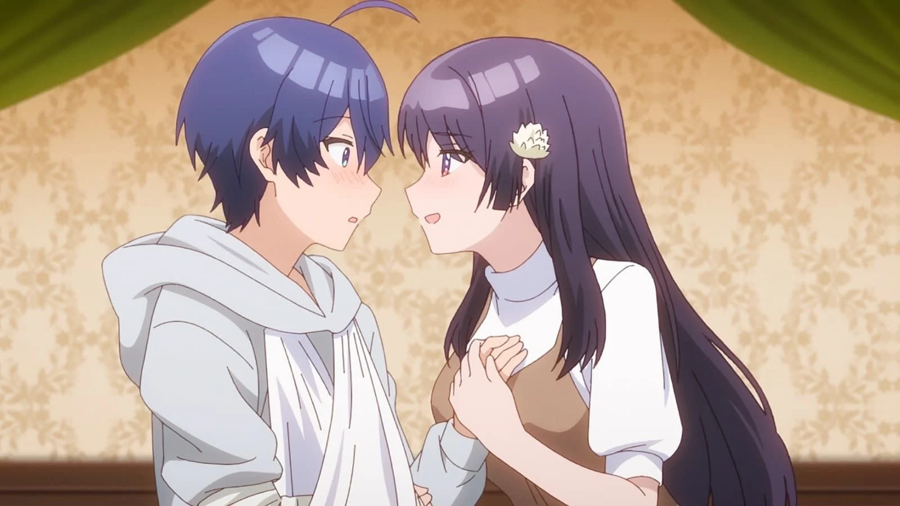
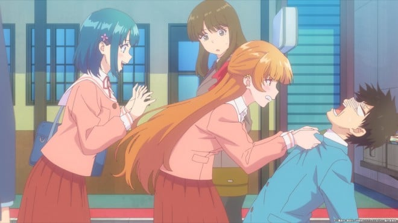
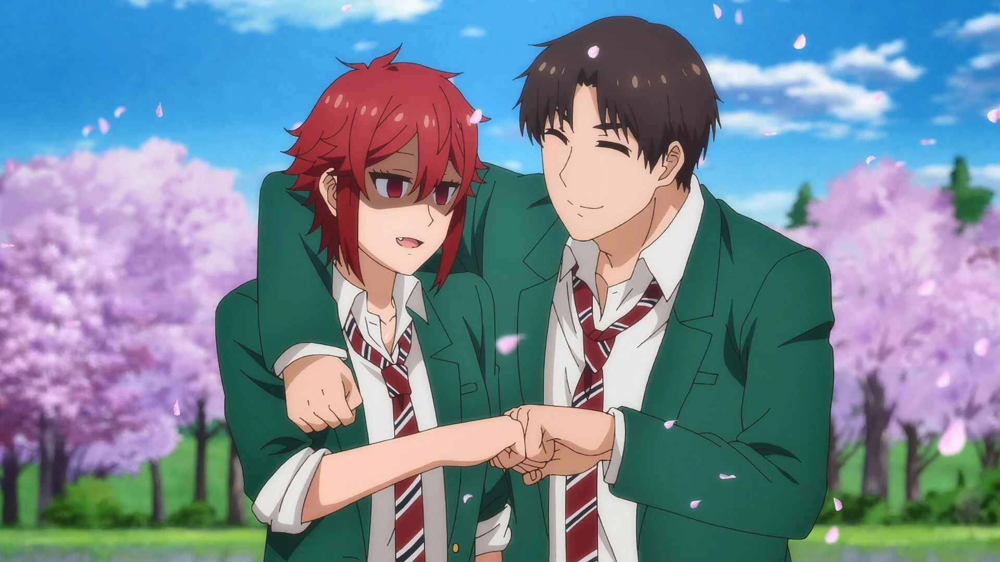
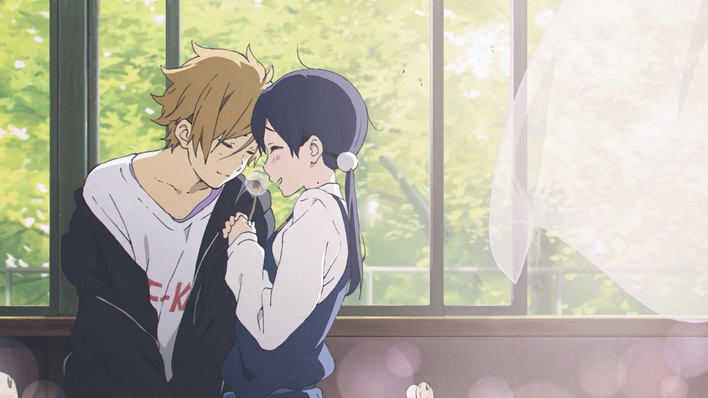
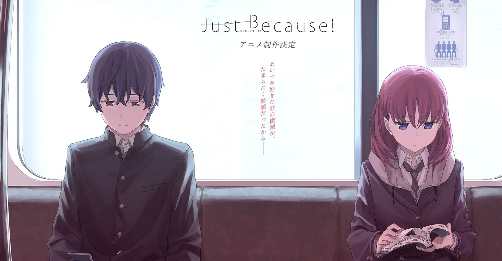
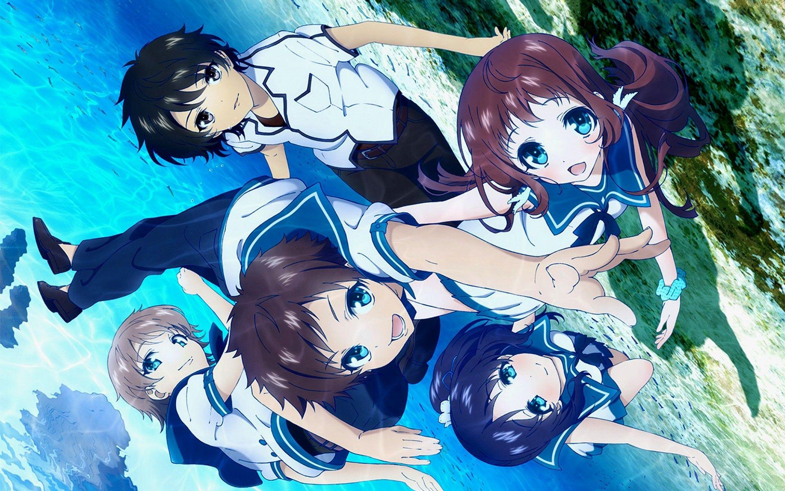
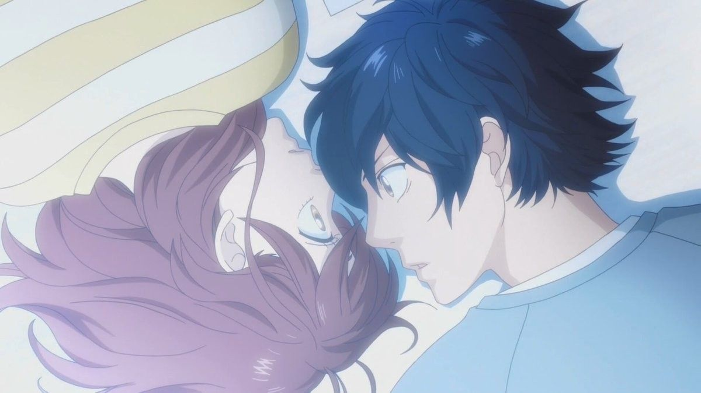
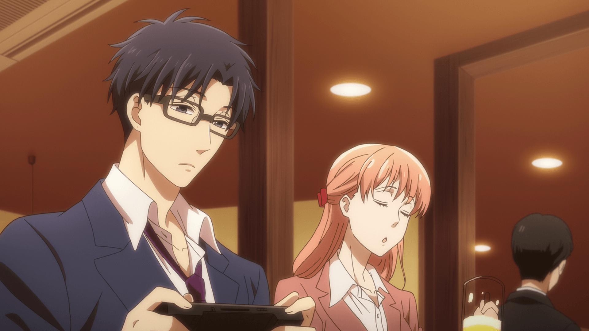
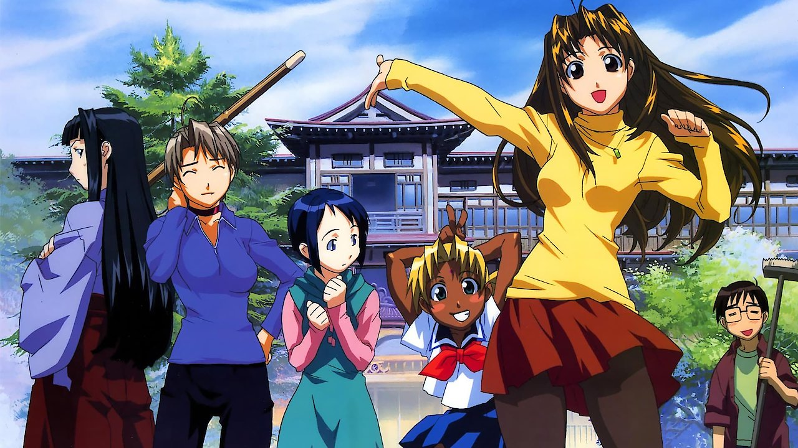
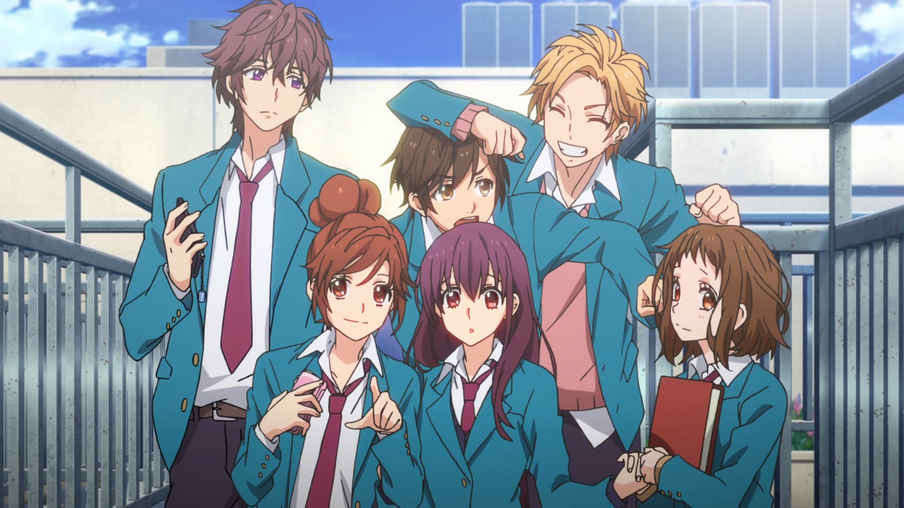

SMASH Senpai
Top 10 Anime Where the Childhood Friend Actually Wins
The childhood friend losing is one of anime’s most painful traditions. Years of shared memories. Countless quiet moments. And somehow… still losing to a transfer student.
But not this time.
These romance anime finally break the curse. No last-minute heartbreak. No sidelined feelings. Just childhood friends who grow up, face their emotions, and actually win the love they’ve been holding onto.
From hilarious romcoms that mock the trope itself to emotional slow-burn romances that reward patience and honesty, these stories prove that familiarity can be just as powerful as fate.
These are the Top 10 Anime Where the Childhood Friend Actually Wins — satisfying, emotional, and deeply cathartic romances that finally give long-time fans the ending they deserve.
Sponsored
#1 Osamake: Romcom Where The Childhood Friend Won’t Lose
Osamake exists purely to challenge one of romance anime’s most painful traditions — the childhood friend always losing. Right from the title, the series makes its mission clear. This is a romcom that refuses to let familiar bonds be ignored in favor of last-minute love interests.
The story follows Sueharu Maru, a boy surrounded by multiple girls with complicated romantic histories. Among them is Kuroha Shida, his childhood friend, who knows him better than anyone else. Instead of quietly suffering in the background, she actively enters the battlefield, refusing to let her feelings be dismissed.
What makes Osamake stand out is its self-awareness. The anime openly acknowledges the frustration viewers feel when childhood friends are sidelined. Characters openly scheme, manipulate situations, and weaponize emotional history to gain an advantage in love. Romance becomes a psychological game.
Beneath the comedy, there’s a genuine emotional core. The childhood bond isn’t treated as something inferior or outdated. Instead, shared memories, trust, and emotional safety become real strengths. The romance develops not through coincidence, but through choice.
Osamake is satisfying because it feels intentional. It doesn’t accidentally reward the childhood friend — it fights for her. For fans tired of predictable heartbreak, this anime feels like long-overdue justice.
- Episode count: 12
- Genre: Romantic Comedy
- Known for: Trope subversion, meta humor
- Core theme: Childhood bonds deserve respect

play anime smash or pass here (not sponsored)
SMASH SENPAI – Smash or Pass#2 You Can’t Be in a Rom-Com with Your Childhood Friends
This anime feels like it was created specifically for viewers who’ve been emotionally scarred by childhood friends losing again and again. Instead of treating the trope seriously, it attacks it head-on with sharp humor and brutal honesty.
The story revolves around Eiyuu, a boy surrounded by childhood friends who are painfully aware of how romcoms usually end. The girls understand the rules. They know the odds. And instead of quietly accepting defeat, they challenge the narrative itself.
What makes this series unique is its constant self-reflection. Characters openly discuss romcom clichés, predictable outcomes, and emotional patterns that usually doom childhood friends. The comedy lands because it mirrors real audience frustration.
Beneath the jokes, there’s real sincerity. The anime treats long-term familiarity as something meaningful. Shared history isn’t boring — it’s comforting. Emotional safety becomes more attractive than dramatic excitement. The romance develops naturally through honesty rather than shock value.
By the time feelings are confronted, the payoff feels earned. This isn’t a pity win. It’s a narrative correction. A romcom that finally admits childhood friends deserve better — and proves it.
- Episode count: 12
- Genre: Comedy, Romance
- Known for: Meta commentary, trope awareness
- Core theme: Breaking romcom destiny
Sponsored
#3 Tomo-chan Is a Girl!
Tomo-chan Is a Girl! delivers one of the most emotionally satisfying childhood-friend victories in modern romcom anime. At its heart, it’s a simple story — a girl in love with her best friend — but its execution is what makes it special.
Tomo Aizawa has always been treated like “one of the guys.” Raised alongside Jun, she struggles to be seen as a romantic interest. Her tomboy personality, combined with Jun’s density, creates a painful emotional gap that many viewers instantly relate to.
Instead of dragging the misunderstanding forever, the anime allows Tomo to grow. She confronts her feelings directly. She experiments with femininity, confidence, and vulnerability. Meanwhile, Jun slowly realizes that the person he relies on most has always been right beside him.
What sets Tomo-chan apart is emotional honesty. The series doesn’t punish Tomo for being herself. Her strength, loyalty, and sincerity are exactly why she wins. The childhood bond becomes the foundation, not an obstacle.
When the romance finally resolves, it feels cathartic. No tricks. No cheap twists. Just two people finally acknowledging what’s been there all along.
- Episode count: 13
- Genre: Romantic Comedy
- Known for: Tomboy heroine, satisfying payoff
- Core theme: Being seen for who you are
#4 Tamako Love Story
Tamako Love Story is a rare romance anime that treats childhood love with quiet realism instead of dramatics. Rather than relying on clichés, it focuses on the awkward, uncomfortable transition from friendship to romance. This isn’t about sudden confessions — it’s about fear, timing, and emotional honesty.
Tamako and Mochizou have grown up together in the same shopping district. Their lives are deeply intertwined, yet emotionally distant. Mochizou’s feelings have existed for years, quietly bottled up out of fear of disrupting what they already have.
What makes this story powerful is its patience. The anime understands that childhood friends don’t fall in love loudly. They hesitate. They overthink. Small moments — glances, pauses, unfinished sentences — carry enormous emotional weight.
Tamako Love Story doesn’t rush growth. Tamako herself must mature emotionally, realizing that love requires awareness, courage, and vulnerability. The confession, when it finally happens, feels earned precisely because of how long it was avoided.
This anime proves that childhood friend romance doesn’t need drama to feel intense. Sometimes, the quietest love stories leave the deepest impression.
- Movie length: 83 minutes
- Genre: Romance, Slice of Life
- Known for: Emotional realism, subtle storytelling
- Core theme: Growing up means risking change
Sponsored
#5 Just Because!
Just Because! is a painfully realistic depiction of unspoken love between childhood friends. It doesn’t rely on exaggerated personalities or dramatic twists. Instead, it captures the emotional paralysis that comes with regret, timing, and fear of rejection.
The story follows Eita, who returns to his hometown just months before graduation. His presence disrupts a fragile emotional balance, especially with Mio, his childhood friend who never fully moved on. Their shared past hangs heavy in every interaction.
What sets Just Because! apart is how restrained it feels. Characters hesitate constantly. Conversations end too soon. Feelings are obvious to the viewer but terrifying to express. The anime understands how real people sabotage themselves emotionally.
Mio’s role as a childhood friend is refreshingly sincere. She doesn’t scheme. She doesn’t chase aggressively. Her feelings exist quietly, built on years of familiarity and emotional reliance. When progress finally happens, it feels organic rather than forced.
Just Because! hits hard because it mirrors real life. Love doesn’t always announce itself. Sometimes, it waits — hoping someone will finally speak.
- Episode count: 12
- Genre: Romance, Slice of Life
- Known for: Realistic pacing, emotional restraint
- Core theme: Regret vs courage
#6 A Lull in the Sea (Nagi no Asukara)
A Lull in the Sea delivers one of the most emotionally complex childhood-friend romances in anime. Set in a world divided between sea-dwellers and surface humans, the story uses fantasy to amplify very real emotional pain.
Hikari and Manaka have grown up together beneath the sea. Their bond feels natural, comfortable, and deeply emotional. Yet, that familiarity becomes a weakness when feelings go unspoken and jealousy creeps in. Love begins to fracture under misunderstanding.
What makes this anime special is its emotional density. Characters don’t just struggle with romance — they struggle with identity, belonging, and fear of abandonment. Childhood bonds are tested by time, distance, and painful emotional growth.
Unlike typical romance anime, Nagi no Asukara allows characters to change drastically. Feelings evolve. Priorities shift. Childhood love doesn’t disappear — it transforms, sometimes painfully. When emotional realizations hit, they feel devastating.
This anime proves that childhood-friend romance isn’t always simple or comforting. Sometimes, it’s the most painful love of all — because it’s tied to who you used to be.
- Episode count: 26
- Genre: Romance, Fantasy, Drama
- Known for: Emotional complexity, stunning visuals
- Core theme: Growing apart and holding on
Sponsored
#7 Blue Spring Ride (Ao Haru Ride)
Blue Spring Ride is one of the most relatable childhood-friend romance anime ever made. It focuses on how time, misunderstanding, and emotional immaturity can quietly tear people apart — even when love never disappears.
Futaba and Kou were once inseparable. Their bond felt natural, innocent, and full of unspoken feelings. But separation and tragedy change Kou deeply. When they reunite years later, he’s no longer the boy Futaba remembers.
What makes this anime powerful is its emotional realism. Kou doesn’t instantly return to who he was. Trauma, guilt, and emotional walls make reconnecting painful. Futaba must decide whether loving him means accepting who he is now — not who he used to be.
The romance progresses slowly, filled with hesitation, misunderstandings, and missed opportunities. Childhood familiarity becomes both a comfort and a burden. Every interaction feels fragile, as if one wrong word could break everything.
Blue Spring Ride proves that childhood love doesn’t fade easily — but rebuilding it requires courage, patience, and emotional growth.
- Episode count: 12
- Genre: Romance, Drama, Slice of Life
- Known for: Emotional slow-burn, realism
- Core theme: Loving someone who has changed
#8 Wotakoi: Love Is Hard for Otaku
Wotakoi takes the childhood-friend trope and ages it up — proving that first love doesn’t end after school. Instead of teenage drama, this anime explores romance between working adults who already know each other deeply.
Narumi and Hirotaka have known each other since childhood. Their shared history removes awkward introductions, but it doesn’t remove emotional distance. Years of familiarity make romance feel safe — yet strangely difficult to acknowledge.
What makes Wotakoi refreshing is its honesty. Love isn’t explosive. Confessions aren’t dramatic. Their relationship grows through comfort, shared hobbies, and quiet understanding. The anime shows that stable love can still be meaningful.
The childhood-friend dynamic allows them to skip the guessing phase. They already know each other’s flaws, habits, and weaknesses. Instead of discovering compatibility, they learn how to maintain it.
Wotakoi proves that childhood love doesn’t have to be dramatic to be successful. Sometimes, it simply grows alongside you.
- Episode count: 11 + OVA
- Genre: Romance, Comedy, Slice of Life
- Known for: Adult romance, comfort vibes
- Core theme: Love built on familiarity
#9 Love Hina
Love Hina is a classic example of the childhood-friend trope disguised as a chaotic harem comedy. Beneath the slapstick humor and misunderstandings lies a simple promise made years ago.
Keitaro’s entire motivation is driven by a childhood memory — a promise to meet again at Tokyo University. That forgotten bond quietly guides every romantic interaction, even when he doesn’t realize it.
What makes Love Hina effective is its long-term payoff. While multiple girls appear, the narrative never forgets its original childhood connection. The winning romance feels earned because it was always there — waiting to be remembered.
The anime uses exaggeration and comedy heavily, but emotional sincerity still breaks through. Childhood love becomes a symbol of persistence, self-improvement, and belief in oneself.
Love Hina helped popularize the childhood-promise trope, influencing countless romance anime after it. Its legacy remains undeniable.
- Episode count: 24 + specials
- Genre: Romance, Comedy, Harem
- Known for: Classic trope execution
- Core theme: Promises that last
#10 I’ve Always Liked You
I’ve Always Liked You is a pure childhood-friend confession story. It strips romance down to its most vulnerable core — the fear of ruining what already exists.
Natsuki and Yuu have been close for years. Their bond feels effortless, filled with shared memories and emotional reliance. But love complicates everything. Natsuki’s struggle is deciding whether honesty is worth the risk.
What makes this story hit hard is its emotional simplicity. There are no love triangles, no distractions, no exaggerated drama. Just two people standing at the edge of emotional change.
The confession isn’t flashy — it’s awkward, nervous, and painfully human. The anime captures the exact moment childhood friendship transforms into something deeper.
I’ve Always Liked You reminds viewers that sometimes, the hardest person to confess to is the one who already knows you best.
- Movie length: 63 minutes
- Genre: Romance, Slice of Life
- Known for: Emotional confession
- Core theme: Risking comfort for love
Play Smash or Pass on SMASH Senpai.
 PLAY SMASH OR PASS
PLAY SMASH OR PASS